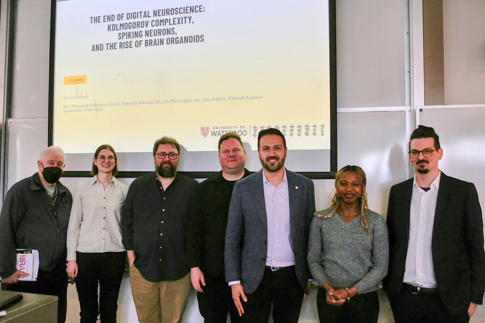

Welcome
The Ethics of AI Institute (formerly the Ethics of AI Society of Waterloo) is an interdisciplinary research organization dedicated to advancing scholarship, public engagement, and informed discussion on the ethical, philosophical, social, and political implications of artificial intelligence.
Our members include educators, students, and administrators from nine universities and colleges.
Our members include educators, students, and administrators from nine universities and colleges.
News & Updates
July 2026
Institutional Charter
The Ethics of AI Institute has begun the process of becoming a formally chartered organization.
July 2026
Board of Directors
The Institute has appointed its inaugural Board of Directors to guide future growth and governance.
June 2026
Institute Launch
The Ethics of AI Society of Waterloo officially became the Ethics of AI Institute.
Next Meeting
July 17, 2026
Institutional Chartering and AI in Agriculture
See the Teams group for details.
Institutional Chartering and AI in Agriculture
See the Teams group for details.

Our third symposium was held on March 13, 2026 at Wilfrid Laurier University and featured a keynote panel with Dr. Patricia Marino, Dr. Ian MacDonald, and Ajax MPP Rob Cerjanec.
Research
The Institute supports interdisciplinary scholarship in AI ethics, AI literacy, philosophy of technology, public policy, governance, and related fields.
View ResearchMeetings
We host regular interdisciplinary discussions bringing together faculty, students, professionals, and policymakers.
Meeting ArchivePublications & Media
Explore our podcast, interviews, articles, books, and other public engagement activities.
ExploreBecome a Member
Membership is open to educators, researchers, students, and professionals interested in the ethical implications of artificial intelligence.
Join our Microsoft Teams community by emailing:
info@ethicsofaiinstitute.com